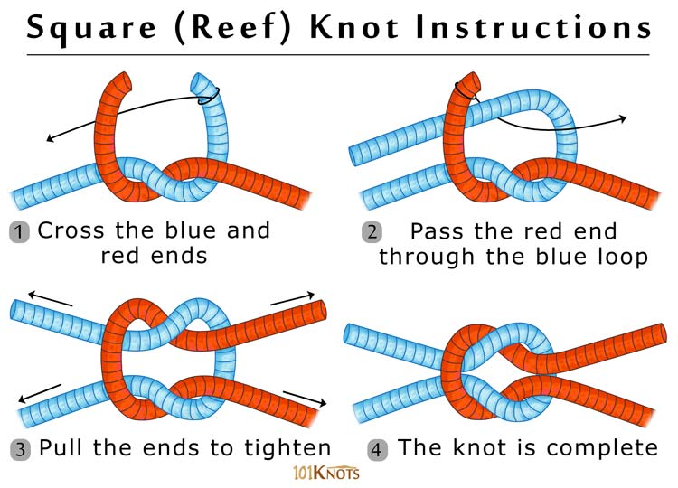

Square Knot
The square knot is a classic for connecting lines and tying knots. Whether you are tying two ropes together to make a longer rope, or you are tying up a bundle of firewood to carry, the square knot is a winner. It’s much more secure and stable than its cousin the granny knot, which everyone is probably familiar with as part of tying their shoes.
